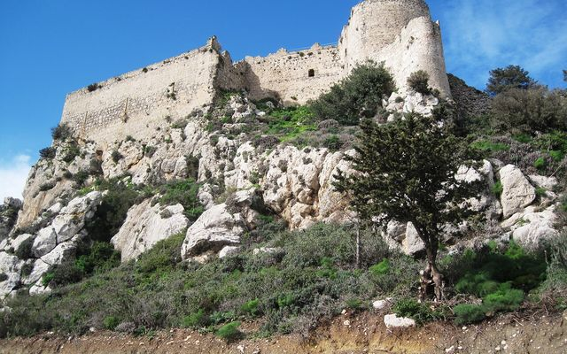

Kıbrıs'ın katmanları: Tunç Çağı'ndan Osmanlı'ya. Doğu Akdeniz'in yol kavşağındaki Kıbrıs'ın kuzeyinde, bakır ticaretinden Gotik katedrallere uzanan dört bin yıllık bir tarih okunur. Ada, adını da verdiği bakır sayesinde Tunç Çağı'nda Doğu Akdeniz ticaretinin merkezlerinden biriydi; Tuzla yakınındaki Enkomi bu dönemin önemli kentidir. Demir Çağı'nda kurulan kent krallıkları arasında Salamis en güçlüsüydü; Kral Mezarları'ndaki at ve araba gömüleri, Soli'nin tiyatrosu ve tepedeki Vouni Sarayı bu dönemin izleridir. Salamisli Havari Barnabas'ın adını taşıyan manastır ve Karpaz'daki Ayia Trias Bazilikası erken Hristiyanlığı anlatır. Bizans döneminde Beşparmak Dağları'na St. Hilarion, Buffavento ve Kantara kaleleri yapıldı. 1192'den itibaren adayı yöneten Lüzinyan hanedanı, Bellapais Manastırı, Lefkoşa'daki Ayasofya (bugün Selimiye Camii) ve Mağusa'daki Aziz Nikolaos (bugün Lala Mustafa Paşa Camii) katedralleriyle Doğu Akdeniz'in en güzel Gotik eserlerini bıraktı. 1489'da adayı alan Venedikliler, Girne Kalesi ve Mağusa surlarını top ateşine karşı güçlendirdi. 1571'de Osmanlı fethiyle birlikte katedraller camiye dönüştü; Büyük Han ve Mevlevi Tekkesi gibi yapılar Lefkoşa'nın dokusuna katıldı. Girne Kalesi'ndeki MÖ 4. yüzyıla ait batık gemi ise adanın denizle iç içe tarihinin simgesidir.
Doğu Akdeniz'in yol kavşağındaki Kıbrıs'ın kuzeyinde, bakır ticaretinden Gotik katedrallere uzanan dört bin yıllık bir tarih okunur.
Ada, adını da verdiği bakır sayesinde Tunç Çağı'nda Doğu Akdeniz ticaretinin merkezlerinden biriydi; Tuzla yakınındaki Enkomi bu dönemin önemli kentidir. Demir Çağı'nda kurulan kent krallıkları arasında Salamis en güçlüsüydü; Kral Mezarları'ndaki at ve araba gömüleri, Soli'nin tiyatrosu ve tepedeki Vouni Sarayı bu dönemin izleridir.
Salamisli Havari Barnabas'ın adını taşıyan manastır ve Karpaz'daki Ayia Trias Bazilikası erken Hristiyanlığı anlatır. Bizans döneminde Beşparmak Dağları'na St. Hilarion, Buffavento ve Kantara kaleleri yapıldı. 1192'den itibaren adayı yöneten Lüzinyan hanedanı, Bellapais Manastırı, Lefkoşa'daki Ayasofya (bugün Selimiye Camii) ve Mağusa'daki Aziz Nikolaos (bugün Lala Mustafa Paşa Camii) katedralleriyle Doğu Akdeniz'in en güzel Gotik eserlerini bıraktı.
1489'da adayı alan Venedikliler, Girne Kalesi ve Mağusa surlarını top ateşine karşı güçlendirdi. 1571'de Osmanlı fethiyle birlikte katedraller camiye dönüştü; Büyük Han ve Mevlevi Tekkesi gibi yapılar Lefkoşa'nın dokusuna katıldı. Girne Kalesi'ndeki MÖ 4. yüzyıla ait batık gemi ise adanın denizle iç içe tarihinin simgesidir.
Bu dönemi görebileceğiniz yerler
 Enkomi (Alasya) ÖrenyeriGazimağusa
Enkomi (Alasya) ÖrenyeriGazimağusa Salamis ÖrenyeriGazimağusaKral Mezarları Müzesi ve ÖrenyeriGazimağusa
Salamis ÖrenyeriGazimağusaKral Mezarları Müzesi ve ÖrenyeriGazimağusa Soli ÖrenyeriLefke
Soli ÖrenyeriLefke Vouni SarayıLefke
Vouni SarayıLefke St. Barnabas ManastırıGazimağusaAyia Trias Bazilikasıİskele
St. Barnabas ManastırıGazimağusaAyia Trias Bazilikasıİskele Antiphonitis KilisesiGirne
Antiphonitis KilisesiGirne St. Hilarion KalesiGirne
St. Hilarion KalesiGirne Buffavento KalesiGirne
Buffavento KalesiGirne
Kantara Kalesiİskele Bellapais ManastırıGirne
Bellapais ManastırıGirne Selimiye CamiiLefkoşa
Selimiye CamiiLefkoşa Lala Mustafa Paşa CamiiGazimağusa
Lala Mustafa Paşa CamiiGazimağusa Othello KalesiGazimağusa
Othello KalesiGazimağusa Girne Kalesi ve Batık Gemi MüzesiGirne
Girne Kalesi ve Batık Gemi MüzesiGirne Büyük HanLefkoşa
Büyük HanLefkoşa Mevlevi Tekke MüzesiLefkoşa
Mevlevi Tekke MüzesiLefkoşa🎓 Kendinizi sınayın
1. Kıbrıs'ın Tunç Çağı'ndaki zenginliğinin kaynağı hangi madendi?
2. Lefkoşa'daki Selimiye Camii aslında hangi katedraldi?
3. Lüzinyan hanedanı adayı hangi yıldan itibaren yönetti?
4. Girne Kalesi'nde sergilenen batık gemi hangi döneme aittir?